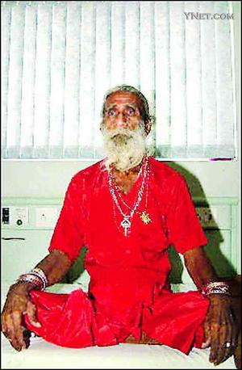
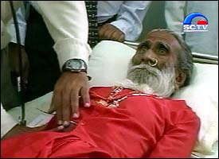
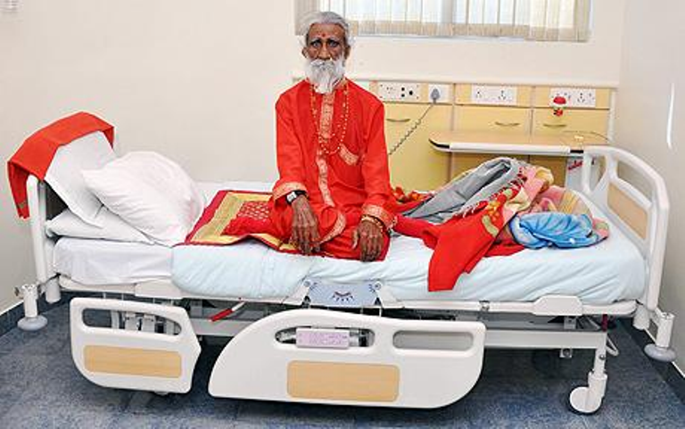

印度老人声称数十年不吃不喝

最近，印度一名已过古稀之年的隐士皮拉拉德·杰尼（见图），不吃不喝照样活命的事引起了一些医学科研人员的好奇，他们对这位老人进行隔离式医学观察，以揭开谜底。
杰尼在印度西部城市艾哈迈达巴德的斯特林医院接受了连续10天隔离式观察。据医院副主管戴尼什·迪塞证实，在此期间，他确实不吃不喝，也未如厕，但精神与身体状况都正常。在接受观察期间，医院对他的房间进行了特别布置，房间中的卫生间也被封死，医院还特意安装了视频监视器，每天24小时对他进行监视。为协助医生证实其所言不虚，杰尼同意在医院观察期内不洗澡。他惟一被允许使用的流体物质就是少量的漱口水，医院方面只提供给他100毫升水，他在漱口后还要把水吐在大口杯中，医生再对这些收集起来的水进行测量，以确信他一点都没有喝。
在医院的“禁闭”结束时，医生注意到杰尼除体重略有减轻外，其身体状况没有任何变坏的迹象。杰尼表示：“感觉我不需要喝水进食。”他声称自己8岁便开始隐居洞窟。按杰尼自己的解释，他不吃不喝能够活过数十载，原因是其上腭有个小洞。几滴水流过这个小洞，就能使他的生命得以维持。医生们都说，他们无法证实杰尼所说的数十年来不吃不喝的说法是真是假。（凌子云剑）（来源：北京青年报）
印医生检查神奇老人，证实其68年不吃不喝

中国日报网站消息：印度一医生小组花了几周时间对普拉德·贾尼的身体进行了彻底检查后证实，自称六十余年不吃不喝而且活得好好的、今年76岁的普拉德·贾尼没有说谎。
据印度媒体11月29日报道，从11月12日起对贾尼进行身体检查的医生小组解释说，贾尼确实在长达六十余年的时间里没有进食和喝水。参与对贾尼进行体检的斯特陵医院研究所所长苏迪尔·沙阿则称，这位男子整个身体系统完全正常。
普拉德·贾尼六十余年不吃不喝的事实震撼了国际医学界并且颠覆了正常的科学逻辑。但是，位于印度西部阿赫迈特塔巴市的医生小组还无法解释一个人为何能不吃不喝活到76岁。据贾尼自己说，他最后一次吃饭、喝水是在十岁的时候。从那时起，他只通过练瑜伽功来维持生命。（来源：国际在线）

人不吃不喝能活多久？
印度一位82岁的老人说，自13岁起就没吃过任何东西，也没喝过一滴水。现在，这位神奇的老人已被印度国防研究机构列为高度监控研究对象，如果证实确有其事，希望从他身上得到启示，用来增强士兵的作战能力，或帮助宇航员等对抗不利环境等。
爷爷说全靠神庇护着
专家想通过科学手段来解释
老人名叫普拉赫拉德·贾尼，是印度古吉拉特邦的传奇人物。
贾尼告诉人们，他8岁离家，随后隐居在山林之中，修行所谓“吸食空气节食法”，13岁起不再吃喝，被当地人奉为“只依靠精神力量就能活着的人”。
他还说，自己不吃不喝还活得健健康康，全靠一位女神庇佑；神通过他上颌一个小孔赐予他“长生不老甘露”，但其中的玄妙他不愿多说。另外，他还得到了一位专门研究超自然力量的印度医生的帮助，所以这些年来活得挺好。
4月22日，贾尼受邀住进当地斯特林医院接受彻底检查和一连串测试，包括核磁共振成像仪扫描、血液检查等。
印度国防研究机构和医院联合组成25人的专家小组，其中包括神经学家、高级内科医生、生理学及相关科学专家等，共同研究贾尼身体代谢机理、能量来源以及这种能力能否造福他人。
医院在监护室内安装了24小时运转的摄像机，如果他走出监护室，也有专人跟踪拍摄。
已6天没吃没喝没排泄
只做4件事：冥想 祷告 沉默 祝福
现在，他已接受了6天隔离观察。
《印度时报》29日报道，身穿红色衣服、戴着鼻环的贾尼在医院期间，除接受检查外，只是冥想、祷告、沉默或给予他人祝福。
在这6天里，贾尼的确不吃不喝，其间也未排泄尿液或粪便。医生说，他的身体没有出现饥渴迹象，体征参数正常，身材精瘦而健康，精神也不错。
隔离观察还将持续15至20天，看看他是否会出现肌肉退化、严重脱水、体重减轻、身体疲惫或器官衰竭等现象。
专家将重点关注他的基因表达，研究何种基因变异导致他具有这一本领。
这是贾尼第二次进入斯特林医院。2003年，他首次接受密切观察。医生后来证实说，贾尼的体征参数“神奇地”保持正常。
参与检查的神经学家苏迪尔·沙阿说，贾尼10天不吃不喝，尿液在膀胱形成后似乎被身体重新吸收。
不过，那次观察期结束后，贾尼的体重稍有下降。一些人由此质疑他的“特异功能”。
假如这是真的
人类有福了……
生理学及相关科学国防研究所所长伊拉瓦扎甘博士说：“如果他的话经过证实，这将是医学领域的一大突破……未来人类登月或者登陆火星都能从中受益。”另外，有助于帮助士兵、受困者等在缺少或根本没有食物和水的环境中生存。
在印度文化中，斋戒或者辟谷是一种常见的行为。据报道，一位名叫斯里·马哈拉杰的耆那教教徒，曾在1997年至1998年间辟谷长达1年时间，其间每天只喝一杯温开水，这是有记录的最长时间的辟谷行为。当年马哈拉杰在结束辟谷时说：“如果你全身心地投入一件事就不会感到饥饿或口渴，也不会感到冷和热，我就一直在思索‘无限’的意义。”
而英国《每日电讯报》报道说，人通过摄取食物获得生存能量，大多数人最多可以50天不进食，最长的绝食纪录是74天。但相关记录没有提到是否禁水。
（综合新华社、中国日报报道）